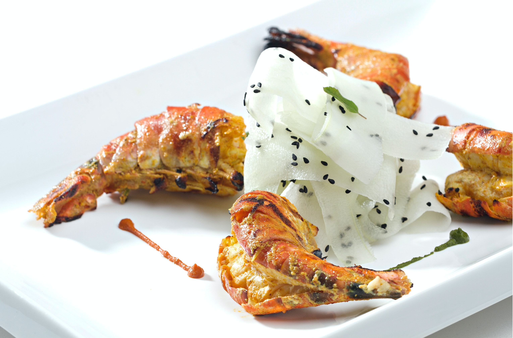

Aux délices naturelles
Resto-Afrik
Accueil
Crevettes sautés au frites de pommes
Ce plat de crevettes est une spécialité des peuples de la côte du Cameroun

ingrédients
Crevettes frais
Tomate : 50g
Oignons : 10g
Pommes : 100g
Préparation
Découper les pommes en fine lamelle
Faire cuire les pommes à l'huile dans la poêle
Mélanger la tomate aux oignons
Mélanger le tout dans la poêle des crevettes